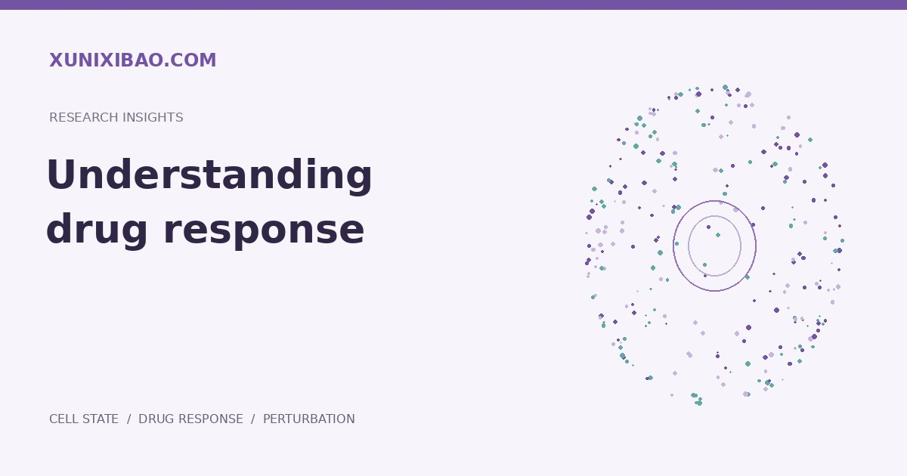

核心摘要
药物响应模拟需要同时定义细胞背景、化合物、剂量、作用时间与观测终点。表达变化、细胞形态与细胞活率是不同读出，不能相互替代。
响应不只是一个分数
药物响应可能指基因表达改变、细胞形态变化、增殖抑制或其他实验终点。开始建模前，首先需要明确模型到底预测哪一种读出，避免把不同含义的结果混为一谈。
剂量决定比较的前提
相同化合物在不同浓度下可能出现不同响应模式。研究中需要保留剂量单位、溶剂对照、处理批次与有效浓度范围。数据未覆盖的剂量区域，应视为需要额外验证的外推场景。
时间影响观察到的现象
早期信号与后期状态变化并不相同。单个终点难以区分短暂应激、持续响应与适应性变化；若研究目标涉及动态过程，应设计匹配的观察时间点。
细胞背景不能被省略
药物响应与细胞类型、遗传背景及培养环境相关。跨细胞模型验证时，需要把新背景与训练中已出现的背景分开报告，避免整体平均指标掩盖特定群体的失效。
将预测转成实验设计
可优先验证预测差异明显、证据较充分且与研究目标相关的条件，同时保留正负对照。对于机制解释，应结合独立表型或正交实验，而不是仅依赖表达相关性。
本文为研究方法解读。具体分析应依据项目数据、适用条件及独立验证结果确定；计算预测用于支持研究决策。
延伸阅读
Arc Institute · Virtual Cell Initiative ↗
Tahoe · 数据与研究路径 ↗
查看本站研究参考
来源与证据
以扰动数据、模型和研究工具连接生物学问题与实验依据。 Tahoe · Research & data ↗
跨数据集、扰动与细胞背景的评测说明，模型选择需要对应具体泛化任务。 Nature Methods · Generalizable perturbation prediction ↗